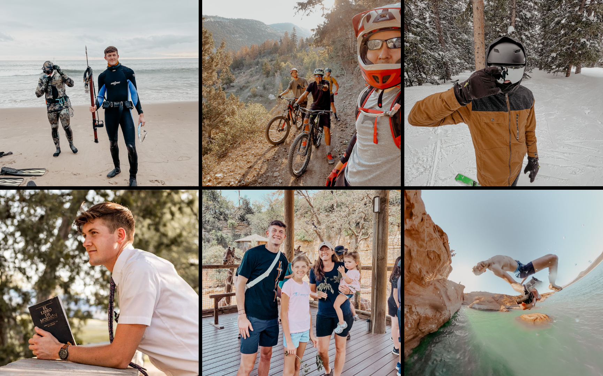

Luke Hauver - About
Home
Experience
Portfolio
About
Contact

I am an aspiring digital marketer at the Marriott School of Business at Brigham Young University with a demonstrated history of working in social media management. Originally I am from Overton, Nevada but just recently moved to New York City. My passions include the outdoors, sports, exercising, music, and spending time with family.
Back To Top ↑